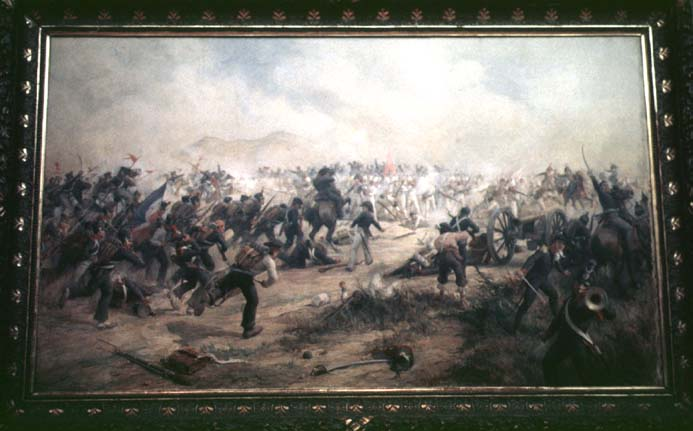

|
Supreme moments
|
|  |
| Pedro Subercaseaux, El momento supremo |
Paintings not only provided the nation with a cast of heroes and villains, it was also called upon to illustrate the heroic foundations of the state. One of the most succesful painters of historical subject matter was the Chilean Pedro Subercaseaux, whose work won several prizes and commissions from museums in both Chile and Argentina. 'The battle of Maipú', first exhibited in 1904 at the Salón de Bellas Artes in Santiago de Chile, depicts a defining victory of the Andean army under San Martín and O'Higgins over the Spaniards. Contemporary observers commented:
'Con dificultad se ha visto un ataque más bravo, más rápido i más sostenido, i jams se vió una resistencia más vigorosa, más firme i más tenaz.'